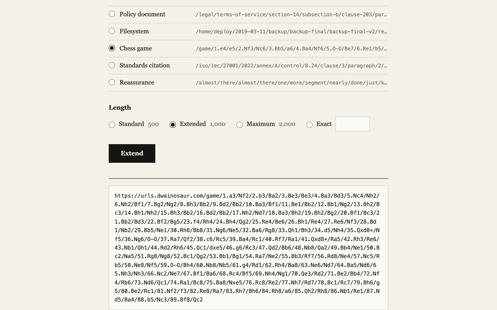

URL shorteners die and take their links with them. I built the opposite. You give urls.dwainosaur.com a destination and a length from 100 to 2,000 characters, and it hands back a link that long. The destination is encoded in the link itself, so the redirector keeps no state. It runs as a Cloudflare Worker with no database, and a link made today resolves for as long as the domain does.
The hard part was making one codec whose output passes as eighteen different kinds of ugly URL. The styles include an enterprise API path, a chess game in algebraic notation, the digits of pi, a DNA sequence, a GPS trail, a policy document with clause numbers, a Windows desktop path, and a query string full of tracking parameters. Every one of them has to carry arbitrary bytes and decode back to exactly the same string.
Frame and digits
The destination goes through two layers before any style sees it. First I frame it: a version byte, the UTF-8 bytes of the URL, and a CRC32 over both in a four byte trailer. The version byte is 0x01 and there is no version 2 yet, but if I ever change the encoding, old links keep working. The checksum matters more than it looks. Resolving a link means trying every carrier in turn until one round-trips, and the CRC is what rejects a wrong carrier that happens to find digits in the path.
Second, the framed bytes become digits in the carrier's radix. I didn't want bigints in the Worker, so the encoding is fixed width. Each group of four bytes is a 32-bit number, written in exactly as many digits as the radix needs to hold \(2^{32}\): 4 digits in radix 256, 8 in hex, 10 in decimal, 16 in the radix 4 alphabet of a DNA sequence. A fixed-width byte count leads the stream, sized for a payload of up to 8,192 bytes, which is two digits in radix 256 and four in decimal. The last group is padded with random bytes rather than zeros, so the padding doesn't show up as the same token at the end of every link. The decoder reads the byte count, takes that many groups, and ignores everything after. That last property is what makes the length knob possible. A carrier can pad to any length it likes with plausible junk.
Carriers
A carrier is two functions. One renders digits into a path, plus a query string if it wants one, at a target length. The other parses a path back into digits. The rendering trick is structural filler. The enterprise carrier maps each byte to one of 256 plural nouns (accounts, blueprints, gateways, allocations), and between runs of two to five data words it drops in regions/eu-west-1 or tenants/tnt-8b8aa7. Those words aren't in the data alphabet, so the parser skips them. A test appends every structural word to a rendered path and asserts the parse comes out unchanged.
The chess carrier has an alphabet of exactly 256 moves: pawn pushes to ranks 3 through 6, knight, bishop, and rook moves to every square, 24 queen moves, and eight extras like O-O and Qxd8+. Move numbers are a prefix the parser strips. The games aren't legal. Both sides play Be3 on consecutive plies and bishops teleport across the board, and I decided nobody would check. The pi carrier opens with /pi/3.1415926535, spends the data digits in chunks of 5 to 12, and once the payload is done resumes the real digits of pi from the eleventh decimal onward. It has 2,200 digits on file, more than a 2,000 character link can use.
The tracking carrier puts the data in query parameters named sid, cid, tok, trace, and six others, in base 36, and pads with utm_source, fbclid, gclid, and _hsenc values of the right shapes and lengths. The GPS carrier writes decimal digits into lat, lng, alt, and hdg segments, and its parser takes every signed decimal it finds. It doesn't bound the values, so the output has longitudes like -362.27721 in it. That is still unfixed.
Length
The requested length is a ceiling, not a promise. The carriers share a path builder that adds data segments unconditionally and filler only while it fits, and the tests require every rendered link to land within 48 characters under the target. Some styles are expensive. In the enterprise style a byte costs one word plus a slash, so https://example.com/ requested at 300 characters comes back at 488 and the response flags it as the minimum. DNA is worse, at 16 letters per four bytes before any exon or codon annotation.
Resolving is a 301 with a one year cache and a noindex header. Before redirecting I run the decoded destination through the same validator as the input: http or https only, no credentials, no private addresses or localhost, and not this domain, so a link can't be extended again into a chain. The tests round-trip 300 random destinations per carrier at random lengths, including a punycode host and percent-encoded paths, and check that a browser's URL parser returns the link unchanged. A normalization step anywhere would corrupt the digits.